Galeria


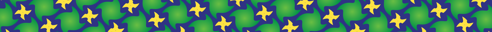
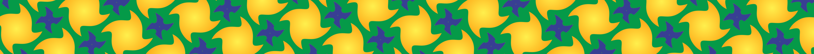
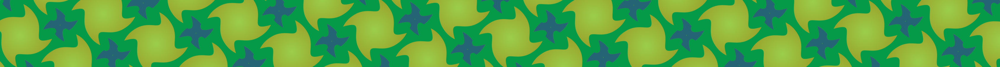


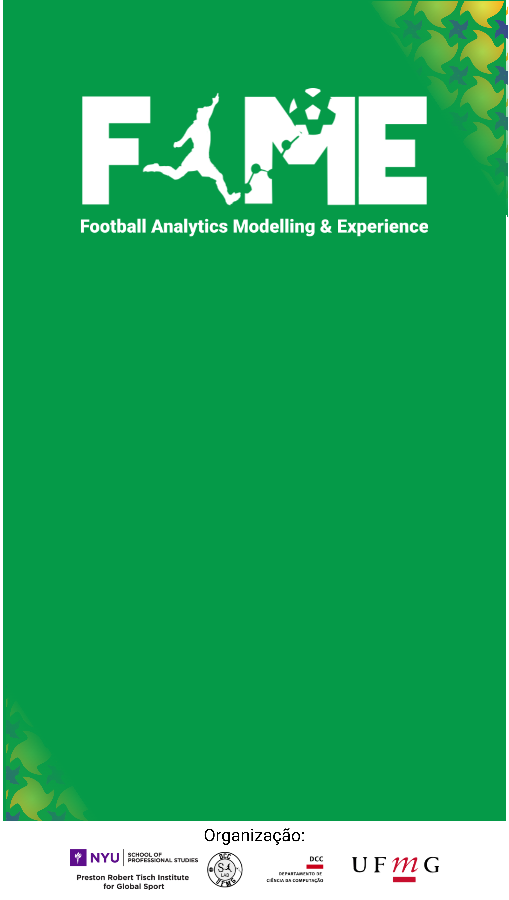

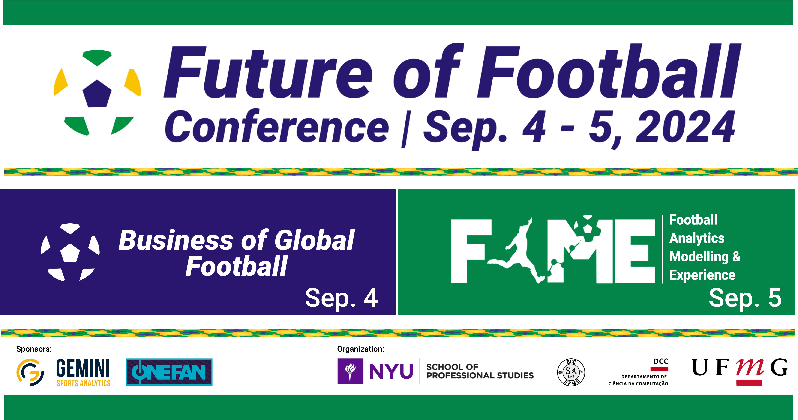
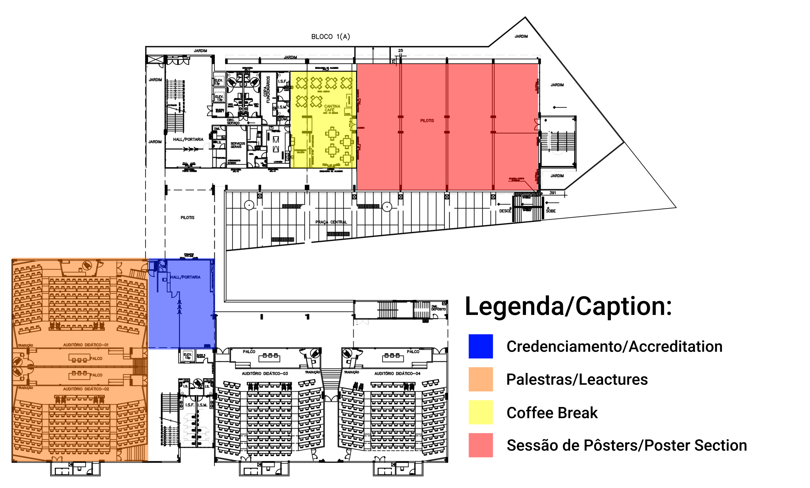

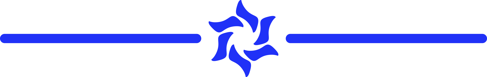
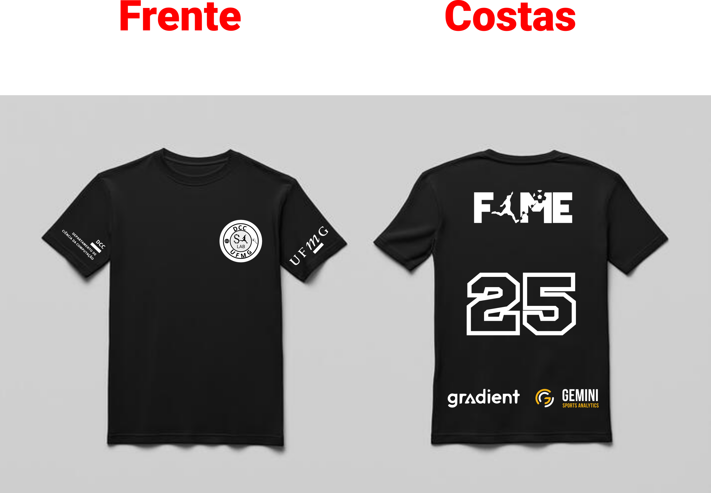
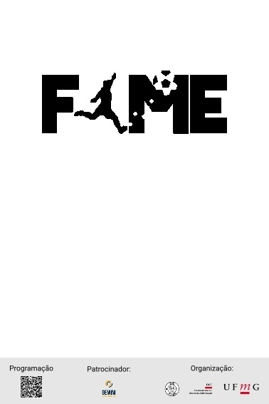

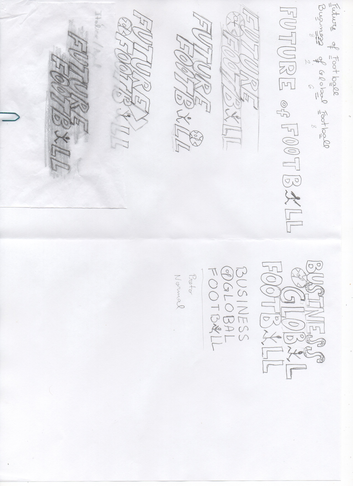

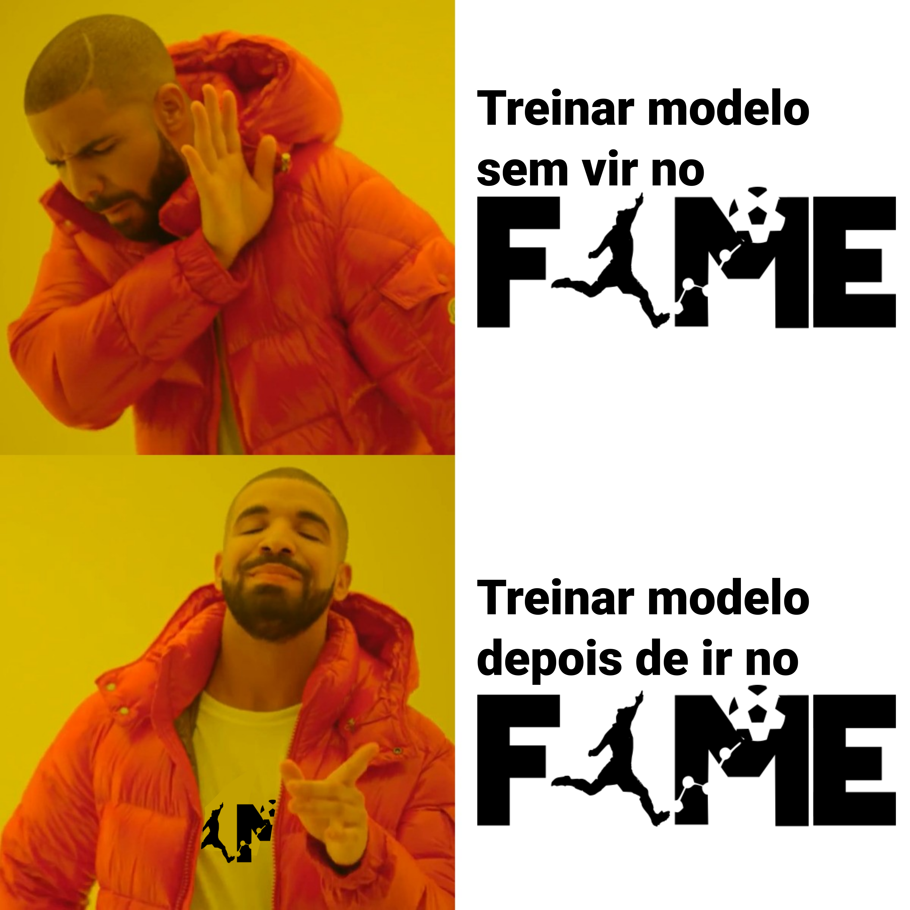
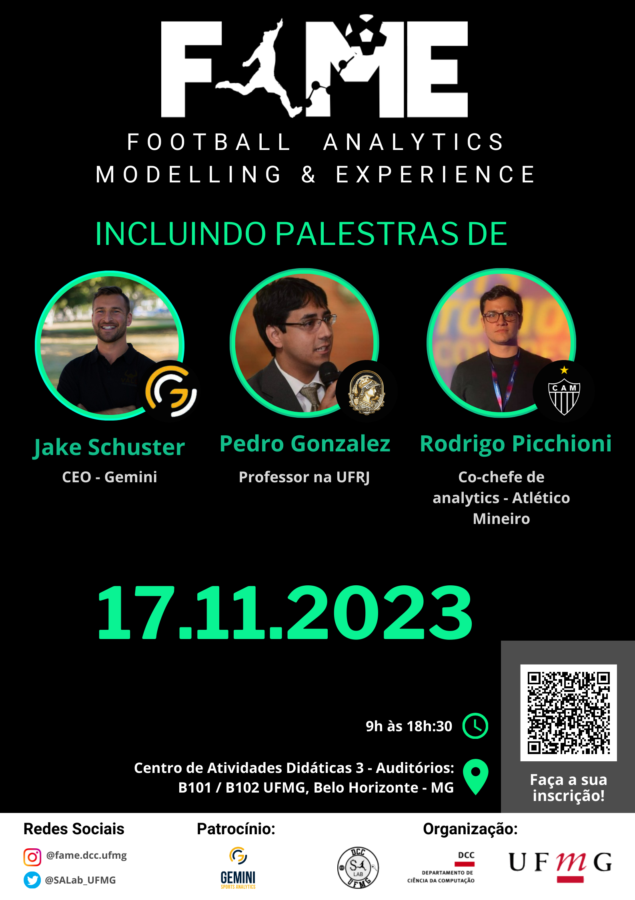
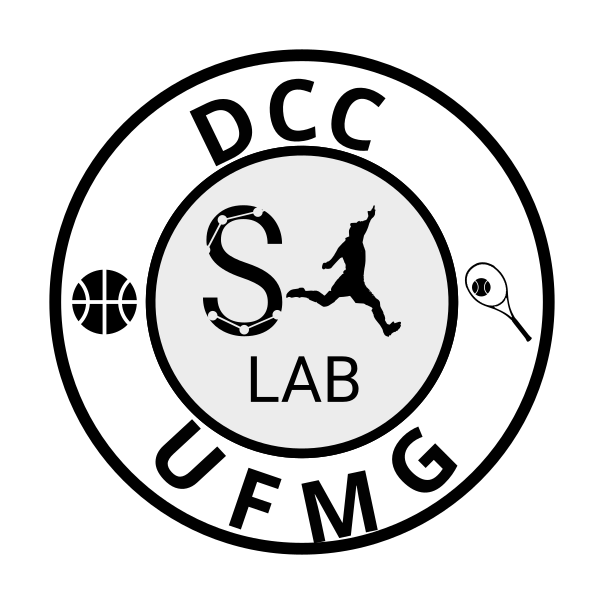
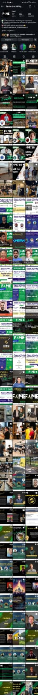
O FAME — Football Analytics Modelling & Experience é o principal evento do Sports Analytics Lab da UFMG, dedicado à interseção entre ciência de dados e futebol. Nascido em 2022 como um evento de meio período, o FAME cresceu de forma consistente até se tornar, em 2024, uma conferência de dois dias com participação internacional — incluindo uma parceria com o Preston Robert Tisch Institute for Global Sport da NYU.
Fui responsável pela identidade visual do evento ao longo de quatro edições consecutivas: do desenvolvimento do logotipo e sistema de marca até a produção de materiais físicos, peças digitais, vídeos institucionais e motion graphics. O desafio central foi criar uma identidade que fosse ao mesmo tempo rigorosa e acessível — que traduzisse o vocabulário científico da análise de dados sem perder o calor e o entusiasmo que o futebol desperta.
O desenvolvimento da identidade visual do FAME partiu da busca por um símbolo que representasse a fusão entre o universo analítico e o esporte. Os esboços iniciais exploraram referências ao campo de futebol, grafos de dados e elementos geométricos que pudessem comunicar precisão sem soar excessivamente técnicos. A identidade final encontrou esse equilíbrio ao trabalhar com formas que evocam tanto a estrutura de uma rede de dados quanto a fluidez do jogo.
A cada edição, a identidade base foi atualizada e expandida para refletir o crescimento do evento — novas trilhas, novos parceiros, novos formatos. Manter coerência visual ao longo de quatro anos, com um evento em constante transformação, exigiu construir um sistema visual robusto o suficiente para se adaptar sem perder reconhecimento. Em 2024, com a chegada da parceria internacional, os materiais precisaram também operar em inglês e responder a um novo nível de expectativa institucional.
Além do design, atuei na produção e edição de vídeos institucionais e de divulgação, com motion graphics desenvolvidos para as campanhas de cada edição. A produção audiovisual tornou-se parte central da estratégia de comunicação do evento — os vídeos funcionavam como ponto de entrada para o público nas redes sociais e como material de apresentação oficial nos dias do evento.
O FAME cresceu de forma consistente ao longo dos quatro anos — em número de participantes, em duração e em alcance. A evolução dos materiais de comunicação acompanhou e, em parte, impulsionou essa trajetória.
Trabalhar no FAME por quatro anos consecutivos foi uma das experiências mais completas da minha trajetória em design. Não apenas pelo volume de entregas ou pela diversidade de formatos — mas pela oportunidade de acompanhar um evento crescer e de ter a comunicação visual como parte ativa desse crescimento. Ver o número de inscritos saltar de 250 para 501, e saber que os materiais de divulgação ajudaram a construir essa percepção de valor, é algo que vai além dos números.
O projeto também me formou como produtora audiovisual: aprender a fazer motion graphics, editar vídeos institucionais e criar conteúdo que funcione tanto em tela grande quanto em stories de celular foram habilidades construídas na prática, edição após edição. A parceria com a NYU em 2024 adicionou uma camada a mais — comunicar em inglês, com um parceiro internacional, para um público ampliado, exigiu ajustar não apenas o idioma mas o tom e a ambição dos materiais.













